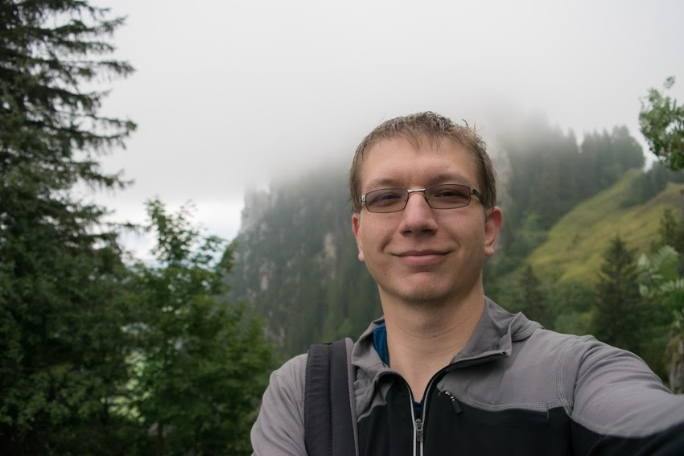

Sándor Kisfaludi‑Bak
PhD Student
Welcome!

I am a PhD student at the Algorithms Group of TU/e, in the Networks project.
My main interests are algorithms, computational and combinatorial geometry, and parameterized complexity.
Office: MF 4.100
Email: